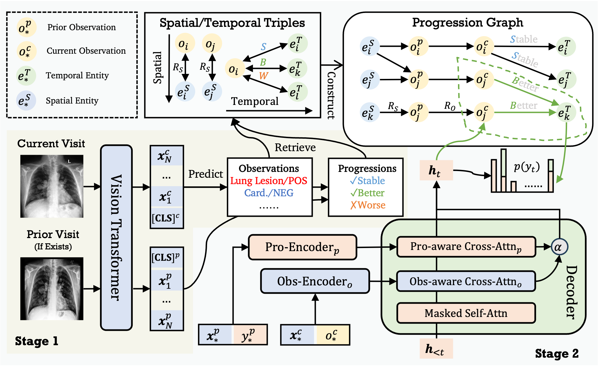

Automating radiology report generation can significantly alleviate radiologists' workloads. Previous research has primarily focused on realizing highly concise observations while neglecting the precise attributes that determine the severity of diseases (e.g., small pleural effusion). Since incorrect attributes will lead to imprecise radiology reports, strengthening the generation process with precise attribute modeling becomes necessary. Additionally, the temporal information contained in the historical records, which is crucial in evaluating a patient's current condition (e.g., heart size is unchanged), has also been largely disregarded. To address these issues, we propose Recap, which generates precise and accurate radiology reports via dynamic disease progression reasoning. Specifically, Recap first predicts the observations and progressions (i.e., spatiotemporal information) given two consecutive radiographs. It then combines the historical records, spatiotemporal information, and radiographs for report generation, where a disease progression graph and dynamic progression reasoning mechanism are devised to accurately select the attributes of each observation and progression. Extensive experiments on two publicly available datasets demonstrate the effectiveness of our model.
@inproceedings{hou-etal-2023-recap,
title = "{RECAP}: Towards Precise Radiology Report Generation via Dynamic Disease Progression Reasoning",
author = "Hou, Wenjun and Cheng, Yi and Xu, Kaishuai and Li, Wenjie and Liu, Jiang",
booktitle = "Findings of the Association for Computational Linguistics: EMNLP 2023",
month = dec,
year = "2023",
address = "Singapore",
publisher = "Association for Computational Linguistics",
url = "https://aclanthology.org/2023.findings-emnlp.140",
doi = "10.18653/v1/2023.findings-emnlp.140",
pages = "2134--2147",
}